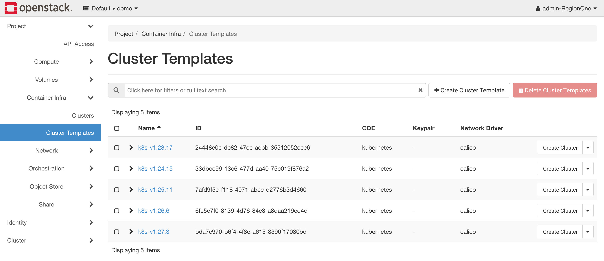
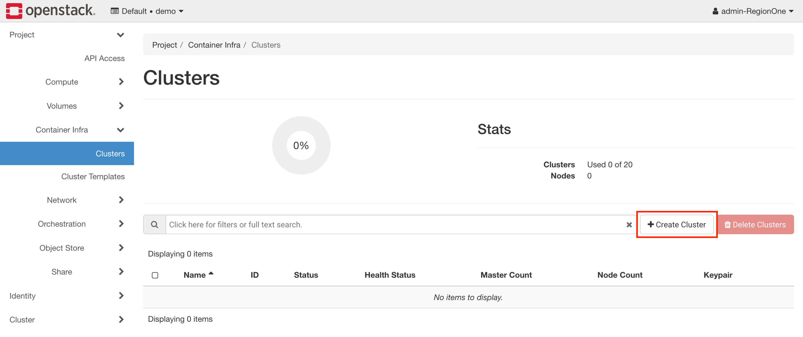
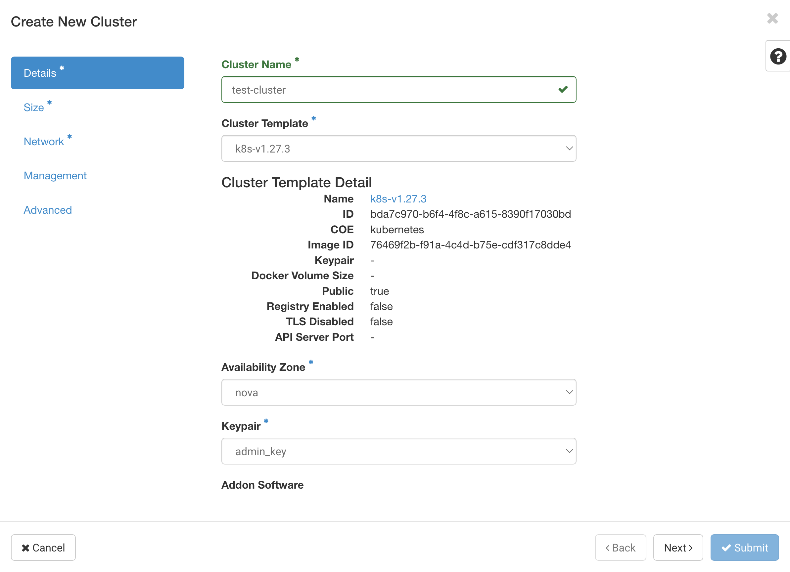
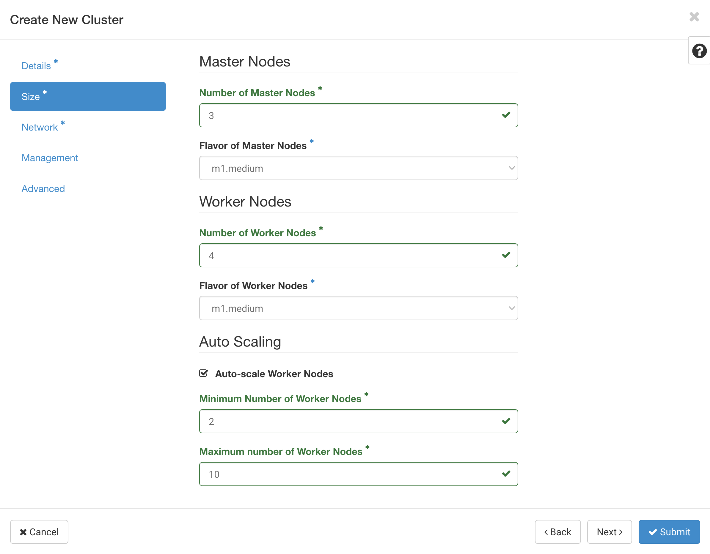
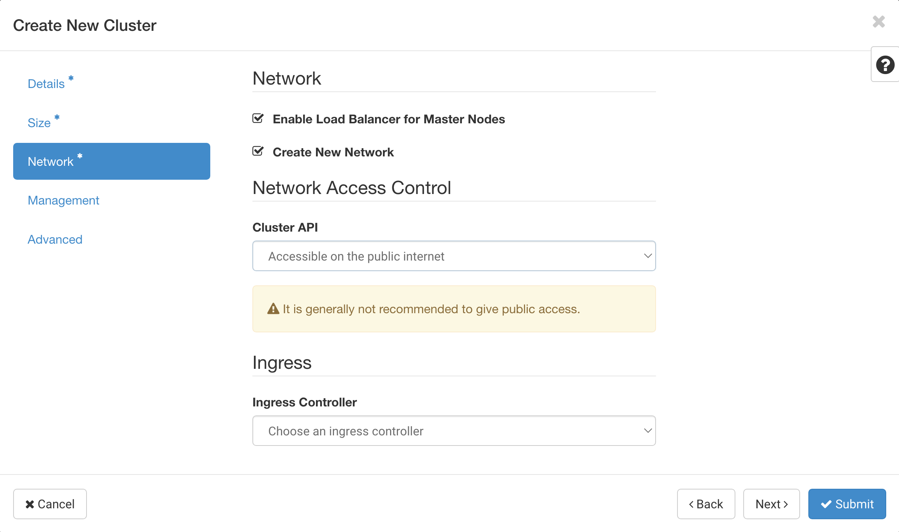
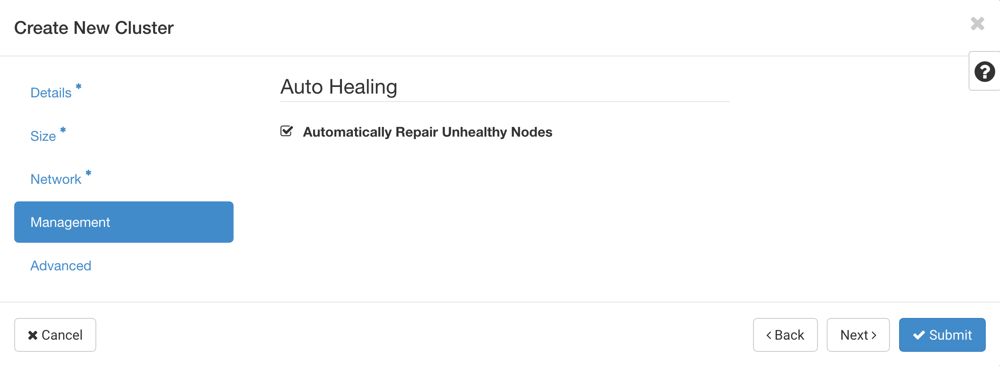
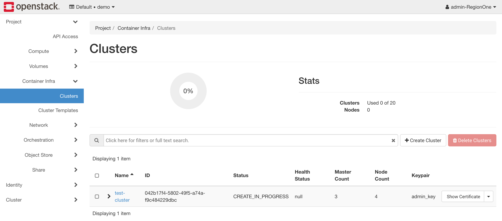
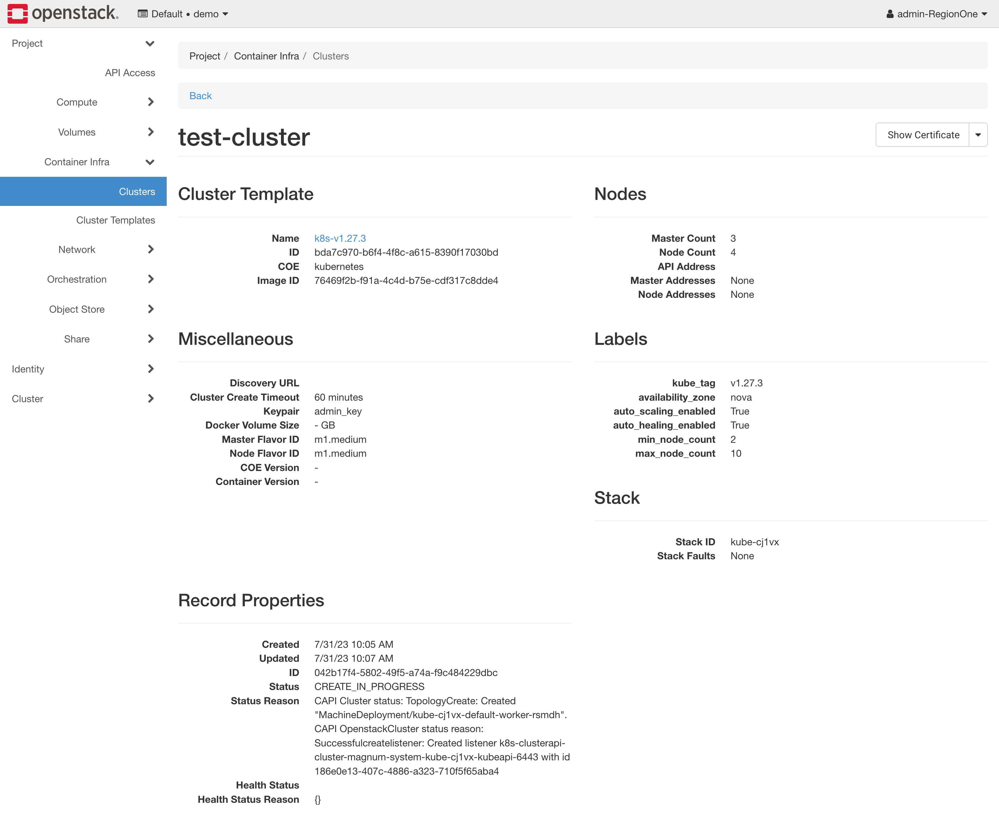
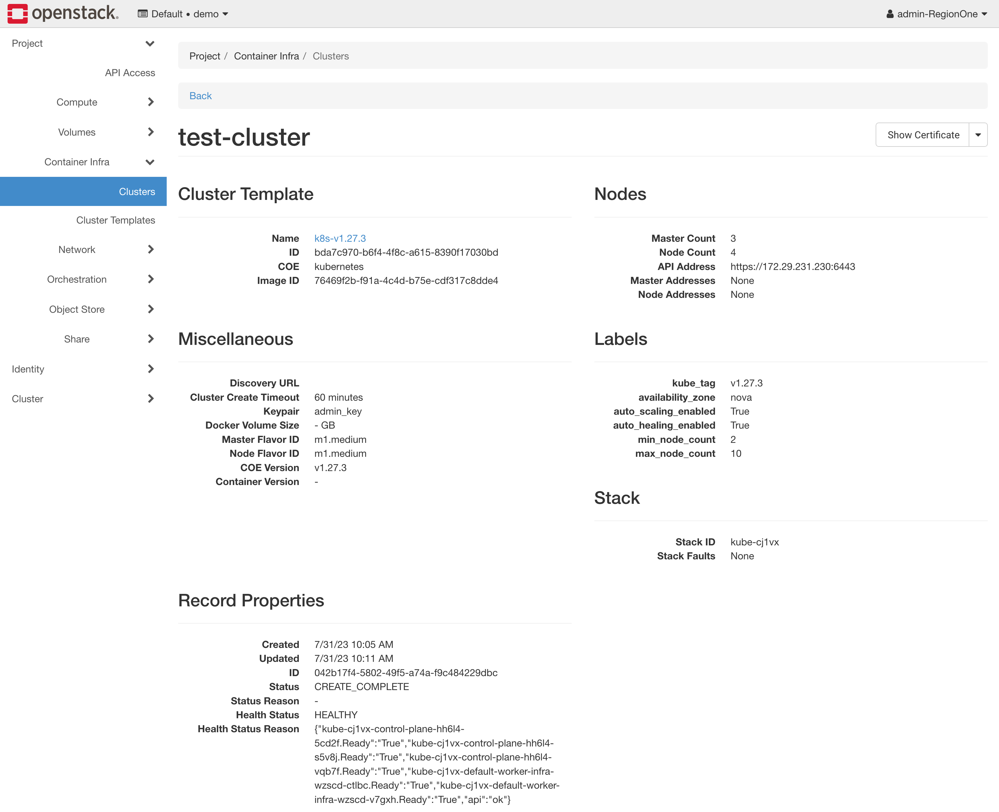

Getting Started
Cluster Operations
Creating
You can use a few different methods to create a Kubernetes cluster with the Cluster API driver for Magnum. We cover a few different methods in this section.
Notes about deployment speed
The Cluster API driver for Magnum is designed to be fast. It is capable of deploying a Kubernetes cluster in under 5 minutes. However, there are several factors that can slow down the deployment process:
-
Operating system image size The average size of the operating system image is around 4 GB. The image needs to be downloaded to each node before deploying the cluster, and the download speed depends on the network connection. The compute service caches images locally, so the initial cluster deployment is slower than subsequent deployments.
-
Network connectivity When the cluster goes up, it needs to pull all the container images from the container registry. By default, it will pull all the images from the upstream registries. If you have a slow network connection, you can use a local registry to speed up the deployment process and read more about pointing to it in the Labels section.
Atmosphere deploys a local registry by default as well as includes several speed optimizations to improve the deployment speed down to 5 minutes.
You can create clusters using several different methods which all end up using the Magnum API. You can either use the OpenStack CLI, OpenStack Horizon dashboard, Terraform, Ansible or the Magnum API directly.
The OpenStack CLI is the easiest way to create a Kubernetes cluster from
your terminal directly. You can use the openstack coe cluster create
command to create a Kubernetes cluster with the Cluster API driver for Magnum.
Before you get started, you'll have to make sure that you have the cluster templates you want to use available in your environment. You can create them using the OpenStack CLI:
export OS_DISTRO=ubuntu # you can change this to "flatcar" if you want to use Flatcar
for version in v1.24.16 v1.25.12 v1.26.7 v1.27.4; do \
[[ "${OS_DISTRO}" == "ubuntu" ]] && IMAGE_NAME="ubuntu-2204-kube-${version}" || IMAGE_NAME="flatcar-kube-${version}"; \
curl -LO https://object-storage.public.mtl1.vexxhost.net/swift/v1/a91f106f55e64246babde7402c21b87a/magnum-capi/${IMAGE_NAME}.qcow2; \
openstack image create ${IMAGE_NAME} --disk-format=qcow2 --container-format=bare --property os_distro=${OS_DISTRO} --file=${IMAGE_NAME}.qcow2; \
openstack coe cluster template create \
--image $(openstack image show ${IMAGE_NAME} -c id -f value) \
--external-network public \
--dns-nameserver 8.8.8.8 \
--master-lb-enabled \
--master-flavor m1.medium \
--flavor m1.medium \
--network-driver calico \
--docker-storage-driver overlay2 \
--coe kubernetes \
--label kube_tag=${version} \
k8s-${version};
done;
Once you've got a cluster template, you can create a cluster using the OpenStack CLI:
$ openstack coe cluster create --cluster-template <cluster-template-name> <cluster-name>
You'll be able to view the status of the deployment using the OpenStack CLI:
$ openstack coe cluster show <cluster-name>
The OpenStack Horizon dashboard is the easiest way to create a Kubernetes using a simple web interface. In order to get started, you can review the list of current cluster templates in your environment by navigating using the left sidebar to Project > Container Infra > Cluster Templates.

In order to launch an new cluster, you will need to navigate to Project > Container Infra > Clusters and click on the Launch Cluster button.

There is a set of required fields that you will need to fill out in order to launch a cluster, the first of which are related to it's basic configuration, the required fields are:
-
Cluster Name The name of the cluster that will be created.
-
Cluster Template The cluster template that will be used to create the cluster.
-
Keypair The SSH key pair that will be used to access the cluster.
In this example, we're going to create a cluster with the name of
test-cluster, running Kuberentes 1.27.3 so using the k8s-v1.27.3
cluster template, and using the admin_key SSH key pair.

The next step is deciding on the size of the cluster and selecting if auto scaling will be enabled for the cluster. The required fields are:
-
Number of Master Nodes The number of master nodes that will be created in the cluster.
-
Flavor of Master Nodes The flavor of the master nodes that will be created in the cluster.
-
Number of Worker Nodes The number of worker nodes that will be created in the cluster.
-
Flavor of Worker Nodes The flavor of the worker nodes that will be created in the cluster.
In addition, if you want to enable auto scaling, you will need to provide the following information:
-
Auto-scale Worker Nodes Whether or not to enable auto scaling for the worker nodes.
-
Minimum Number of Worker Nodes The minimum number of worker nodes that will be created in the cluster, the auto scaler will not scale below this number even if the cluster is under utilized.
-
Maximum Number of Worker Nodes The maximum number of worker nodes that will be created in the cluster, the auto scaler will not scale above this number even if the cluster is over utilized.
In this example, we're going to create a cluster with 3 master node and 4
worker nodes, using the m1.medium flavor for both the master and worker
nodes, and we will enable auto scaling with a minimum of 2 worker nodes and
a maximum of 10 worker nodes.

The next step is managing the network configuration of the cluster. The required fields are:
-
Enable Load Balancer for Master Nodes This is required to be enabled for the Cluster API driver for Magnum to work properly.
-
Create New Network This will determine if a new network will be created for the cluster or if an existing network will be used. It's useful to use an existing network if you want to attach the cluster to an existing network with other resources.
-
Cluster API This setting controls if the API will get a floating IP address assigned to it. You can set this to Accessible on private network only if you are using an existing network and don't want to expose the API to the public internet. Otherwise, you should set it to Accessible on the public internet to allow access to the API from the external network.
In this example, we're going to make sure we have the load balancer enabled for the master nodes, we're going to create a new network for the cluster, and we're going to make sure that the API is accessible on the public internet.

For the next step, we need to decide if we want to enable auto-healing for the cluster which automatically detects nodes that are unhealthy and replaces them with new nodes. The required fields are:
- Automatically Repair Unhealthy Nodes Whether or not to enable auto-healing for the cluster.
In this example, we're going to enable auto-healing for the cluster since it will help keep the cluster healthy.

Finally, you can override labels for the cluster in the Advanced section, we do not recommend changing these unless you know what you're doing. Once you're ready, you can click on the Submit button to create the cluster. The page will show your cluster being created.

If you click on the cluster, you'll be able to track the progress of the cluster creation, more specifically in the Status Reason field, seen below:

Once the cluster is created, you'll be able to see the cluster details, including the health status as well:

At this point, you should have a ready cluster and you can proceed to the Accessing section to learn how to access the cluster.
Accessing
In order to access the Kubernetes cluster, you will have to request for a
KUBECONFIG file generated by the Cluster API driver for Magnum. You can do
this using a few several ways, we cover a few of them in this section.
You can use the OpenStack CLI to request a KUBECONFIG file for a
Kubernetes cluster. You can do this using the openstack coe cluster config
command:
$ openstack coe cluster config <cluster-name>
Upgrading
The Cluster API driver for Magnum supports upgrading Kubernetes clusters to any minor release in the same series or one major release ahead. The upgrade process is performed in-place, meaning that the existing cluster is upgraded to the new version without creating a new cluster in a rolling fashion.
Note
You must have an operating system image for the new Kubernetes version available in Glance before upgrading the cluster. See the Images documentation for more information.
In order to upgrade a cluster, you must have a cluster template pointing at the
image for the new Kubernetes version and the kube_tag label must be updated
to point at the new Kubernetes version.
Once you have this cluster template, you can trigger an upgrade by using the OpenStack CLI:
$ openstack coe cluster upgrade <cluster-name> <cluster-template-name>
Node group role
Roles can be used to show the purpose of a node group, and multiple node groups can be given the same role if they share a common purpose.
$ openstack coe nodegroup create kube test-ng --node-count 1 --role test
$ openstack coe nodegroup list kube --role test
+--------------------------------------+---------+-----------+--------------------------------------+------------+-----------------+------+
| uuid | name | flavor_id | image_id | node_count | status | role |
+--------------------------------------+---------+-----------+--------------------------------------+------------+-----------------+------+
| c8acbb1f-2fa3-4d1f-b583-9a2df1e269d7 | test-ng | m1.medium | ef107f29-8f26-474e-8f5f-80d269c7d2cd | 1 | CREATE_COMPLETE | test |
+--------------------------------------+---------+-----------+--------------------------------------+------------+-----------------+------+
$ kubectl get nodes
NAME STATUS ROLES AGE VERSION
kube-7kjbp-control-plane-vxtrz-nhjr2 Ready control-plane,master 3d v1.25.3
kube-7kjbp-default-worker-infra-hnk8x-v6cp9 Ready worker 2d19h v1.25.3
kube-7kjbp-test-ng-infra-b8yux-3v6fd Ready test 5m v1.25.3
nodeSelector:
# node-role.kubernetes.io/ROLE_NAME: ""
node-role.kubernetes.io/test: ""
node.cluster.x-k8s.io/nodegroup is also available for selecting a specific node group.
nodeSelector:
# node.cluster.x-k8s.io/nodegroup: "NODEGROUP_NAME"
node.cluster.x-k8s.io/nodegroup: "test-ng"
Reference
Here reference awesome blog:
Kubernetes Cluster Autoscaler with Magnum CAPI Driverwritten by Satish Patel.